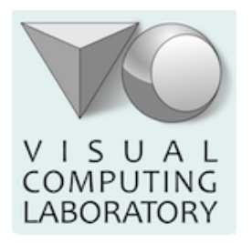
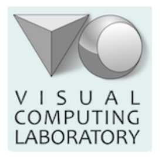
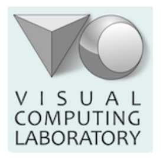
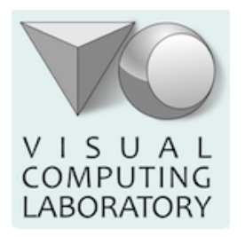
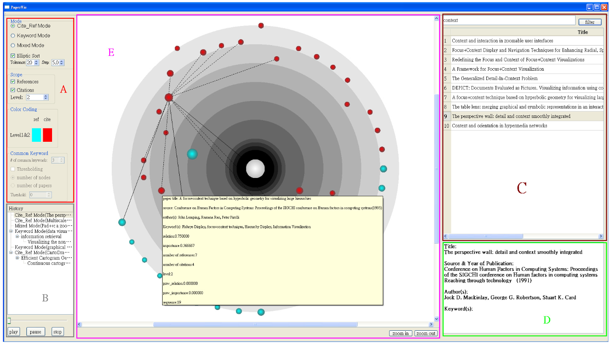
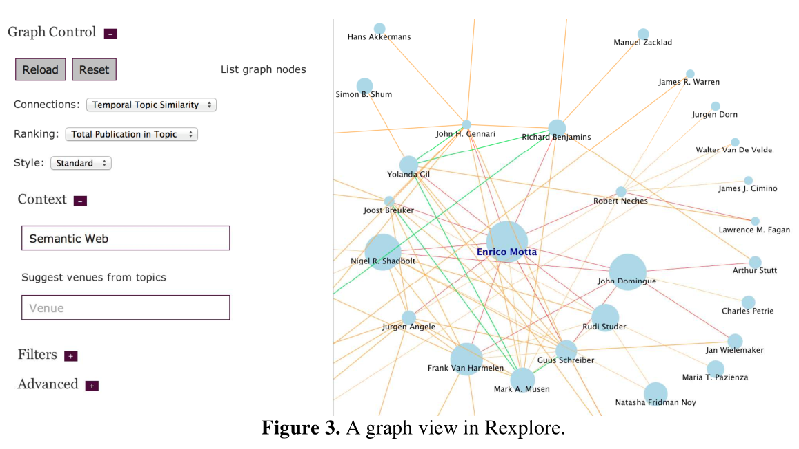
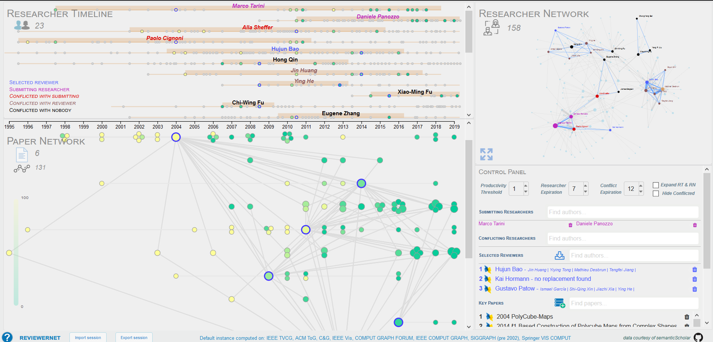

ReviewerNet.org
Visualizing Citation and Authorship Relations for Finding Reviewers
Candidate
Mario Leonardo Salinas
 Supervisors
Supervisors
Dott. Paolo Cignoni
Dott. Daniela Giorgi
 

Mario Leonardo Salinas
 Supervisors
SupervisorsDott. Paolo Cignoni
Dott. Daniela Giorgi
 

The problem
Reviewer finding by journal editors and IPC members
- Look for active experts with good topic coverage
- Identify research communities by searching the literature
- Check conflict of interest and distribution of candidate in the community
Introduction
|

|
Related work
More than 100 visual approaches for document collections proposed in the last 10 years

Most of the works focused on static visualization
Related work
|

|
Related work
|

|
Related work
|

|
Main Intuition & The Reviewer Selection Process
- Specific goal: provide enough understanding to help editors IPC members in picking reviewers
- To support the user in the reviewer selection process we only rely on citations 
- Main intuition: authors of relevant papers are good candidate reviewers
The User Interface

Data
- The Semantic Scholar corpus contains more than 180M publications.
- Papers are provided as JSON objects, one per line, then gzipped and partitioned in batches.
{
"id": "4cd223df721b722b1c40689caa52932a41fcc223",
"title": "Knowledge-rich, computer-assisted composition of Chinese couplets",
"authors": [
{
"name": "John Lee",
"ids": [
"3362353"
]
},
"..."
],
"inCitations": [
"c789e333fdbb963883a0b5c96c648bf36b8cd242"
],
"outCitations": [
"abe213ed63c426a089bdf4329597137751dbb3a0",
"..."
],
"year": 2016,
"venue": "DSH",
"journalName": "DSH",
"..."
}
Data
-
Data quality is fairly good, but there are some issues:
- ambiguity in how venues are referenced (acronyms, multiple abbreviations, ecc...)
- lack of consistency in citations as extracted from JSON files
- Solution: data pre-processing and consolidation
Data
Pre-processing
- Each single JSON has been parsed and filtered separately, in parallel, with a python script.
- Approximate string matching of venues names to correctly extract publication from selected sources.
- The final consolidation step produces 3 files (authors, papers, journals) representing the ReviewerNet reference instance
Data
Pre-processing
- We extracted only publications from selected sources in the Computer Graphics field, spanning the years in-between 1995 and 2019.
- The final reference dataset contains 22.887 papers, 145.900 citations, and 29.549 authors.
| ACM Transactions on Graphics | 2594 |
| Computer Graphics and Applications | 1697 |
| Computer Graphics Forum | 3521 |
| Computers & Graphics | 2092 |
| IEEE Transactions on Visualization and Computer Graphics | 3638 |
| Visual Computer | 2107 |
| Proceedings of IEEE Conference Visualization (pre 2006) | 474 |
| Proceedings of ACM SIGGRAPH (pre 2003) | 6718 |
Implementation Details
- Python 2.7 scripts for preprocessing (fuzzywuzzy for string matching)
- HTML5, JS for UI and D3js for graph drawing
- ReviewerNet is a client-side application
Implementation Details
-
The tool is open and publicly available
at reviewernet.org - The source code is available
at https://github.com/cnr-isti-vclab/ReviewerNet -
ReviewerNet can be built over any subset of the Semantic Scholar corpus, following the user-friendly procedure described
at https://github.com/cnr-isti-vclab/ReviewerNet/tree/master/parser
Live Demo
Evaluation
- We evaluated a preliminary version of ReviewerNet on the dataset focused on Computer Graphics
- 15 senior researchers were asked to search for three reviewers for a paper that they had to choose reviewers for in the recent past
- For training, the volunteers were only provided with a 6-minutes tutorial video
- The platform was then evaluated filling a questionnaire
Evaluation
- Only one user out of 15 reported s/he was not able to figure out how to use the system.
- 73.3% of the testers evaluated ReviewerNet as either good or excellent in finding key papers and researchers.
- 86.7% of the testers thought ReviewerNet was good or excellent to help avoiding conflicts of interest.
- 71.4% of the testers agreed or strongly agreed that ReviewerNet reduces the time spent to look for good sets of reviewers
Evaluation
- In addition, the testers could insert additional comments
- We used their suggestions to improve the preliminary version of the platform:
- improved effectiveness of the visualization and the interaction modes
- page-zero problem solved by automated key papers insertion from PDF references
- customizable data coverage by user-friendly generation of a ReviewerNet instance
Conclusions
- ReviewerNet fully supports the reviewer selection process.
- Only relies on citations and co-authorship relationships.
- Avoids conflicts and builds a distributed pool of reviewers
Conclusions & further work
- The evaluation of a preliminary version confirmed that:
- the users were able to get acquainted with the system even with a very limited training
- the platform offers different useful functionalities supporting the reviewer selection task
- The evaluation also highlighted that there was room for improving the system, which we did.
Further work
- An automatic strategy to suggest key papers by computing network features (e.g. betweenness centrality).
- Visual interface for building the reference dataset starting from a set of venues.
Publications
- Best paper nominee ath the 2019 edition of the Smart Tools and Applications in Graphics conference
- selected for publication in a special issue of the Elsevier Computers & Graphics journal [currently under review]